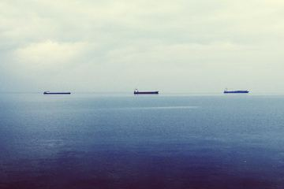
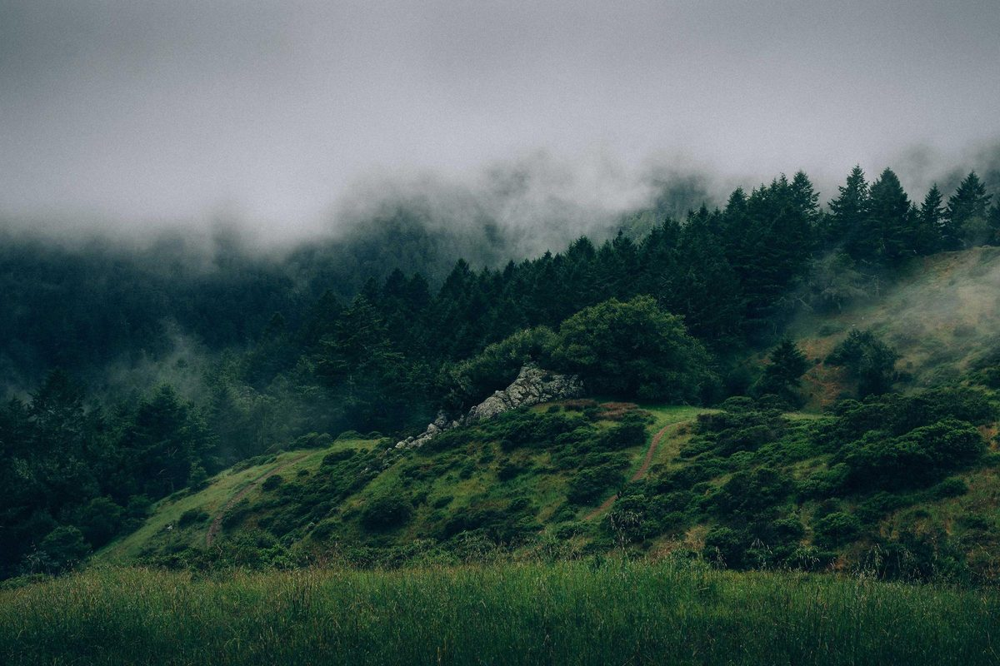

100%
Compare before you save
Drag the line across the picture and zoom in to check the detail.
Every change shows the new file size straight away, so you know what you will get before you save.
Drag the line across the picture and zoom in to check the detail.
Move the slider and watch the size. If a file would come out larger, Pinch says so and keeps your original.

harbour.aviffrom JPG 428 KB196 KB −54%JPG, PNG, WebP, AVIF, GIF, BMP and ICO. Transparent parts get a fill colour you pick when the format has no transparency.
Drop forty photos, choose one set of settings, change any single file if it needs it, then save everything as one ZIP.

For forms that say “under 100 KB”. Pinch finds the highest quality that fits, and makes the picture smaller only when it has to.
One click sets format, size and quality for the place the picture is going.
Even resampling with Lanczos. Good for photos.
Make a small picture two to four times bigger. Smooth and Sharp resample, Pixel keeps hard edges for pixel art, and AI (detail) runs Real-ESRGAN on your device.
WebP, AVIF, JPG and PNG are saved by encoders that ship with Pinch, so the result is the same in every browser. The marked rows are checked live in the browser you are using now.
| Format | Opens | Saves | Best for |
|---|---|---|---|
| JPG | Yes | YesMozJPEG | Photos that have to open anywhere |
| PNG | Yes | YesLossless, or fewer colours | Screenshots, logos and anything see-through |
| WebP | Yes | Yeslibwebp | Photos and graphics on websites |
| AVIF | Yes | Yeslibavif | The smallest photos for modern browsers |
| GIF | First frame | Yes256 colours | Old apps and email |
| BMP | Yes | Yes | Older Windows software |
| ICO | Yes | Yes16 to 256 px | Website and app icons |
| SVG | Yes | No | Turning a drawing into pixels |
| HEIC | Checking | No | iPhone photos, to turn into JPG or WebP |
Pinch is a web page that does all its work on your computer or phone. There is no server to send pictures to, no account to make and no daily limit.
One small exception, so you know: the star count on the GitHub button at the top comes from GitHub’s public API, fetched at most once every five minutes. It asks for a number and never sends images or anything about them.
Well-known open source codecs, compiled to WebAssembly. Each one runs in a Web Worker, so the page stays smooth while it works.
Pinch itself is open source under the MIT licence. Read it on GitHub.
Every common step has a key. Press ? in the studio to bring up this list whenever you need it.
Something else? Ask on GitHub.
No. Your images are read from your device, processed inside this browser tab and saved back to your device. There is no server that receives them. You can watch the Network tab in your browser’s developer tools to confirm it, or switch off Wi-Fi once the page has loaded. The one download you may see later is the AI upscaling model, fetched from this site the first time you use it. It comes to you; nothing goes back. The only other site the page contacts is GitHub’s public API, to show the star count on the top bar.
It depends on the picture. The four sample photos on this page are already compressed JPGs, and the Web preset (WebP at quality 75) still made them 24% to 48% smaller. AVIF goes further: the harbour photo came out 54% smaller. Photos straight from a phone camera start out much larger, so they usually have more to lose. Pinch shows the exact size of every file before you save.
Yes, in a way. Real-ESRGAN learned what sharp photos tend to look like and draws edges and texture that fit. The result usually looks crisper than plain resizing, but the new detail is a good guess, not information recovered from your file. Don’t rely on it where accuracy matters, such as faces in evidence, small text or number plates. Smooth, Sharp and Pixel only enlarge what is already there.
Yes. Pinch comes with a HEIC decoder (libheif, compiled to WebAssembly), so iPhone photos open in any current browser, not just Safari. Save them as JPG to share anywhere, or as WebP or AVIF to make them much smaller.
Current versions of Chrome, Edge, Firefox and Safari, on computers and phones. AI upscaling is fastest where WebGPU is available, and falls back to WebAssembly, which is slower, everywhere else.
No daily limit, no file count limit and no watermark. The only limit is your device’s memory: very large pictures, above about 40 megapixels, are refused so the tab doesn’t run out of memory.
Yes. There are no ads, no account, no paid tier and nothing to install. It costs nothing to run because your device does the work.
Yes, under the MIT licence. The code is at github.com/mhfrough/pinch. The encoders it uses are open source too, each under its own licence.
Each one runs in your browser, with no account and nothing to install.